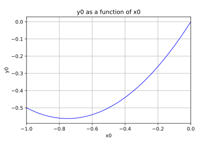
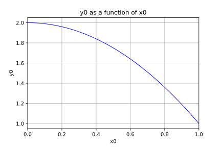
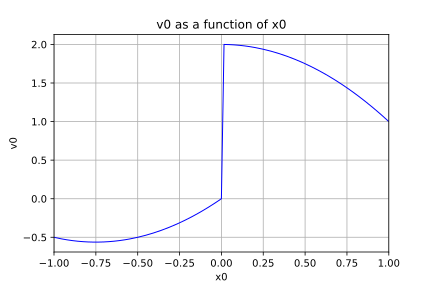

Mixture of experts¶
In this example we are going to approximate a piece wise continuous function using an expert mixture of metamodels.
The metamodels will be represented by the family of :
where the N classes are defined by the classifier.
Using the supervised mode the classifier partitions the input and output space at once:
The classifier is MixtureClassifier based on a MixtureDistribution defined as:
The rule to assign a point to a class is defined as follows: is assigned to the class .
The grade of with respect to the class  is .
is .
[1]:
from __future__ import print_function
import openturns as ot
from matplotlib import pyplot as plt
from openturns.viewer import View
import numpy as np
[2]:
dimension = 1
# Define the piecewise model we want to rebuild
def piecewise(X):
# if x < 0.0:
# f = (x+0.75)**2-0.75**2
# else:
# f = 2.0-x**2
xarray = np.array(X, copy=False)
return np.piecewise(xarray, [xarray < 0, xarray >= 0], [lambda x: x*(x+1.5), lambda x: 2.0 - x*x])
f = ot.PythonFunction(1, 1, func_sample=piecewise)
[3]:
# Build a metamodel over each segment
degree = 5
samplingSize = 100
enumerateFunction = ot.LinearEnumerateFunction(dimension)
productBasis = ot.OrthogonalProductPolynomialFactory([ot.LegendreFactory()] * dimension, enumerateFunction)
adaptiveStrategy = ot.FixedStrategy(productBasis, enumerateFunction.getStrataCumulatedCardinal(degree))
projectionStrategy = ot.LeastSquaresStrategy(ot.MonteCarloExperiment(samplingSize))
[4]:
# Segment 1: (-1.0; 0.0)
d1 = ot.Uniform(-1.0, 0.0)
fc1 = ot.FunctionalChaosAlgorithm(f, d1, adaptiveStrategy, projectionStrategy)
fc1.run()
mm1 = fc1.getResult().getMetaModel()
mm1.draw(-1.0, -1e-6)
[4]:

[5]:
# Segment 2: (0.0, 1.0)
d2 = ot.Uniform(0.0, 1.0)
fc2 = ot.FunctionalChaosAlgorithm(f, d2, adaptiveStrategy, projectionStrategy)
fc2.run()
mm2 = fc2.getResult().getMetaModel()
mm2.draw(1e-6,1.0)
[5]:

[6]:
# Define the mixture
R = ot.CorrelationMatrix(2)
d1 = ot.Normal([-1.0, -1.0], [1.0]*2, R)# segment 1
d2 = ot.Normal([1.0, 1.0], [1.0]*2, R)# segment 2
weights = [1.0]*2
atoms = [d1, d2]
mixture = ot.Mixture(atoms, weights)
[7]:
# Create the classifier based on the mixture
classifier = ot.MixtureClassifier(mixture)
[8]:
# Create local experts using the metamodels
experts = ot.Basis([mm1, mm2])
[9]:
# Create a mixture of experts
evaluation = ot.ExpertMixture(experts, classifier)
moe = ot.Function(evaluation)
[10]:
# Draw the mixture of experts
moe.draw(-1.0, 1.0)
[10]:
